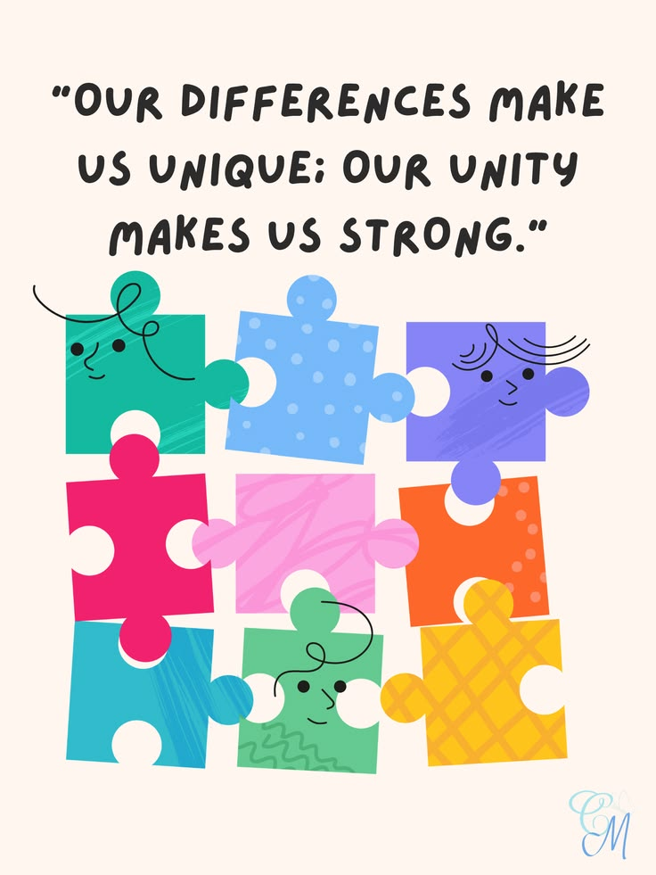
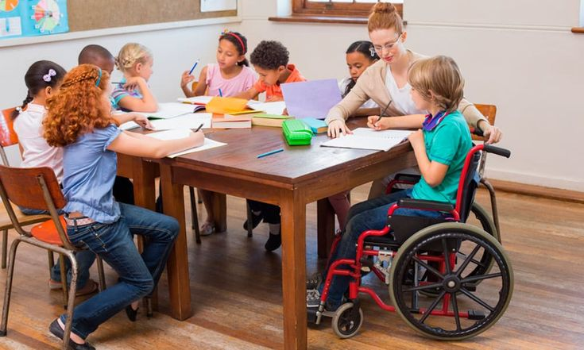
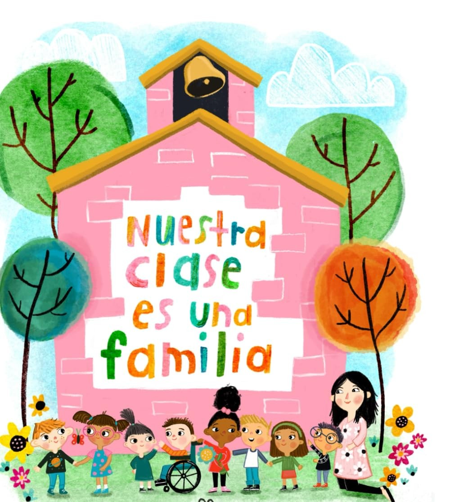

¿Realmente estamos incluyendo a todos?
Un análisis sobre las aulas mexicanas, las adaptaciones "razonables" y el verdadero significado de hacer espacio para la diversidad.
El verdadero problema
Después de leer el artículo sobre las inclusiones “razonables” en materia de discapacidad en México, algo que me quedó bastante claro es que hablar de educación inclusiva es mucho más fácil que llevarla realmente a la práctica.
Muchas veces pensamos que incluir a un estudiante significa simplemente permitirle estar dentro del mismo salón que los demás o hacer alguna adaptación cuando la necesita.
Pero el verdadero problema es que ciertas medidas buscan adaptar al estudiante al sistema que ya existe, en lugar de cuestionar si ese sistema está diseñado para atender a la diversidad desde el principio.

No somos una excepción
Como futura docente, considero que no podemos pensar que todos los estudiantes van a aprender de la misma manera ni que todos tienen que ajustarse a una única forma de enseñar.
Si una persona necesita una adaptación para poder participar en las mismas condiciones que sus compañeros, no debería verse como un favor o como una excepción, sino como parte de una educación que realmente pretende ser accesible.

Factores Institucionales
La inclusión no depende únicamente del maestro. Obviamente, el docente tiene un papel importantísimo, pero también existen factores institucionales, sociales y políticos.
No podemos pedirle a un maestro que sea completamente inclusivo si el sistema no le proporciona las herramientas, preparación y recursos necesarios para hacerlo.
Más allá de la discapacidad
La inclusión no debería reducirse únicamente a la discapacidad. Una escuela inclusiva es aquella que reconoce diferentes formas de aprender, comunicarse y participar.
La diversidad no debería ser vista como un problema que tenemos que solucionar, sino como una característica normal de cualquier grupo.

Crear las condiciones.
Al final, mi principal reflexión después de leer este artículo es que incluir no es simplemente permitir que alguien esté presente, sino crear las condiciones para que realmente pueda participar y aprender. Y creo que esa diferencia es enorme.
"Como futura profesora, me quedo con la idea de que no quiero limitarme a preguntar ‘¿qué necesita este alumno para adaptarse a mi clase?’, sino preguntarme:"
‘¿Qué puedo cambiar yo de mi clase para que este alumno pueda formar parte de ella?’
Para mí, ahí empieza una inclusión mucho más real.